2022 National 5 Physics - Section 2 questions
Source: Scottish Qualifications Authority (SQA) / Qualifications Scotland. This is a StemInteract HTML companion, not an official HTML edition. Selectable text is supplied alongside original page images. Use the images or original PDF for equations, powers, fractions, vector notation, tables and diagrams; text extraction cannot fully preserve mathematical layout.
Jump to a question
PDF page 1
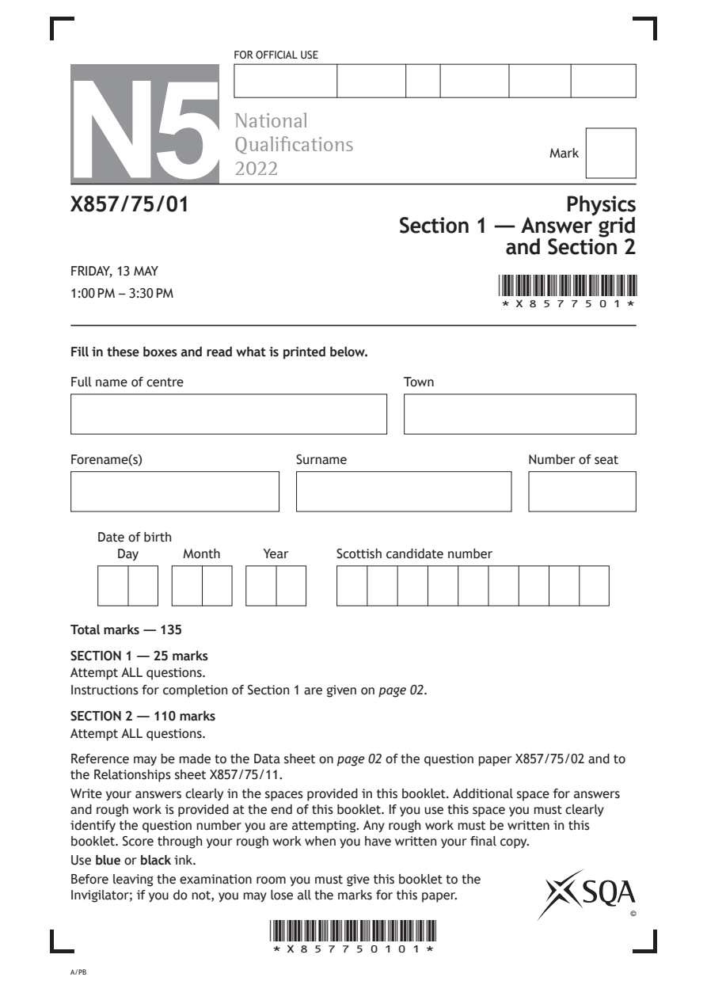
Selectable page text
FOR OFFICIAL USE
N5
National
Qualications
Mark
2022
X857/75/01 Physics
Section 1 — Answer grid
and Section 2
FRIDAY, 13 MAY
1:00 PM – 3:30 PM
*X8577501*
Fill in these boxes and read what is printed below.
Full name of centre Town
Forename(s) Surname Number of seat
Date of birth
Day Month Year Scottish candidate number
Total marks — 135
SECTION 1 — 25 marks
Attempt ALL questions.
Instructions for completion of Section 1 are given on page 02.
SECTION 2 — 110 marks
Attempt ALL questions.
Reference may be made to the Data sheet on page 02 of the question paper X857/75/02 and to
the Relationships sheet X857/75/11.
Write your answers clearly in the spaces provided in this booklet. Additional space for answers
and rough work is provided at the end of this booklet. If you use this space you must clearly
identify the question number you are attempting. Any rough work must be written in this
booklet. Score through your rough work when you have written your final copy.
Use blue or black ink.
Before leaving the examination room you must give this booklet to the
Invigilator; if you do not, you may lose all the marks for this paper.
©
*X857750101*
A/PBPDF page 2
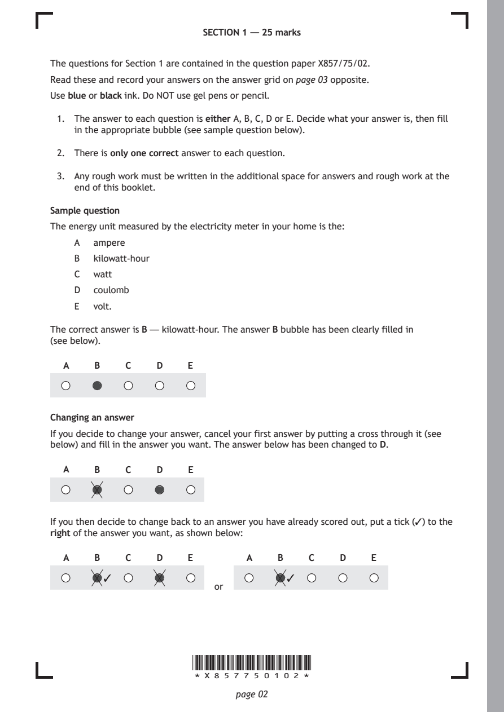
Selectable page text
SECTION 1 — 25 marks
The questions for Section 1 are contained in the question paper X857/75/02.
Read these and record your answers on the answer grid on page 03 opposite.
Use blue or black ink. Do NOT use gel pens or pencil.
1. The answer to each question is either A, B, C, D or E. Decide what your answer is, then fill
in the appropriate bubble (see sample question below).
2. There is only one correct answer to each question.
3. Any rough work must be written in the additional space for answers and rough work at the
end of this booklet.
Sample question
The energy unit measured by the electricity meter in your home is the:
A ampere
B kilowatt-hour
C watt
D coulomb
E volt.
The correct answer is B — kilowatt-hour. The answer B bubble has been clearly filled in
(see below).
A B C D E
Changing an answer
If you decide to change your answer, cancel your first answer by putting a cross through it (see
below) and fill in the answer you want. The answer below has been changed to D.
A B C D E
If you then decide to change back to an answer you have already scored out, put a tick (3) to the
right of the answer you want, as shown below:
A B C D E A B C D E
or
*X857750102*
page 02PDF page 3

Selectable page text
SECTION 1 — Answer grid
*OBJ25AE1*
A B C D E
1
2
3
4
5
6
7
8
9
10
11
12
13
14
15
16
17
18
19
20
21
22
23
24
25
*X857750103*
page 03 [Turn overPDF page 4
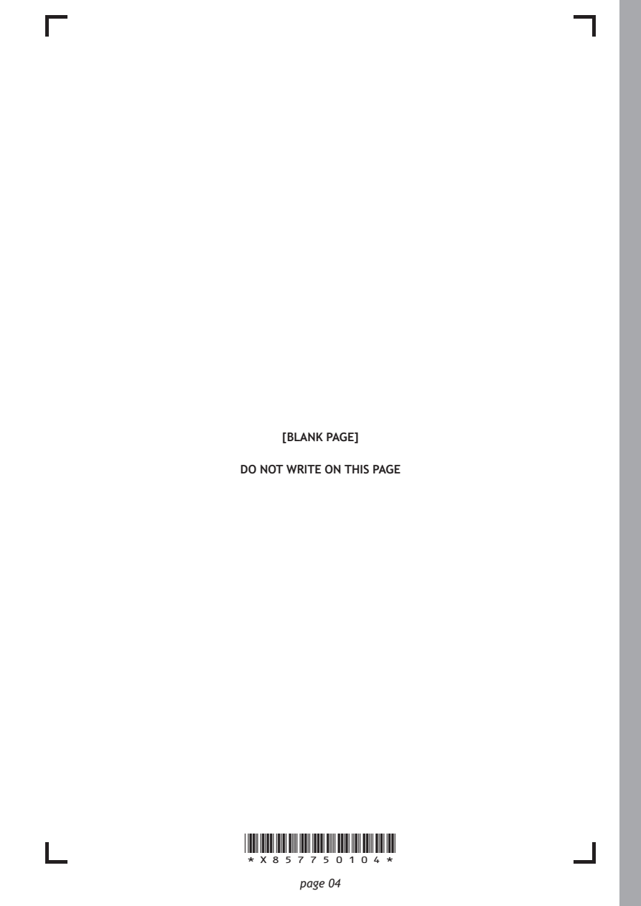
Selectable page text
[BLANK PAGE]
DO NOT WRITE ON THIS PAGE
*X857750104*
page 04PDF page 5

Selectable page text
[Turn over for SECTION 2
DO NOT WRITE ON THIS PAGE
*X857750105*
page 05PDF page 6
Section 2, Question 1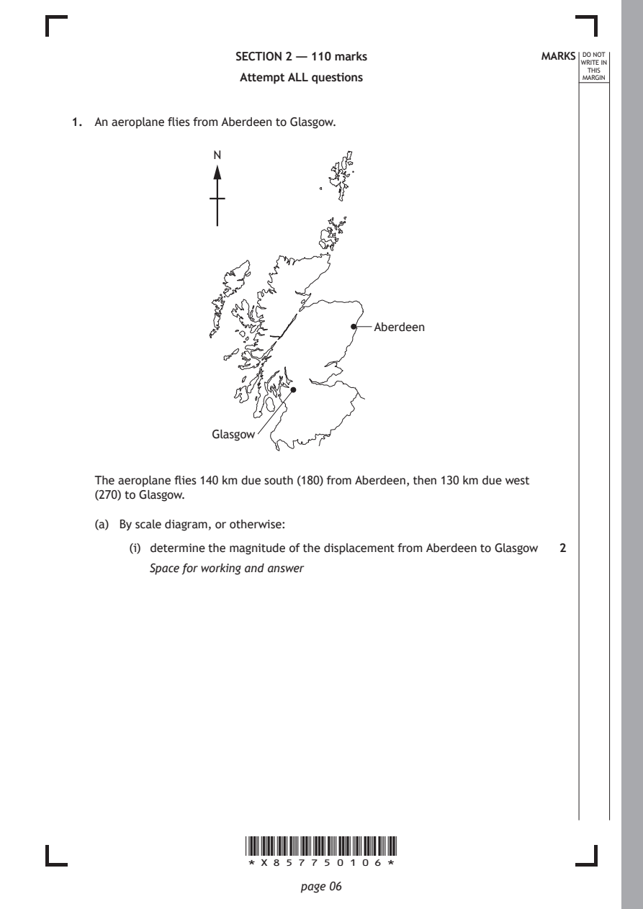
Selectable page text
SECTION 2 — 110 marks MARKS _{W}^{D}_{R}^{O}_{I} _{T}^{N}OT
E IN
THIS
Attempt ALL questions MARGIN
1. An aeroplane flies from Aberdeen to Glasgow.
N
Aberdeen
Glasgow
The aeroplane flies 140 km due south (180) from Aberdeen, then 130 km due west
(270) to Glasgow.
(a) By scale diagram, or otherwise:
(i) determine the magnitude of the displacement from Aberdeen to Glasgow 2
Space for working and answer
*X857750106*
page 06PDF page 7
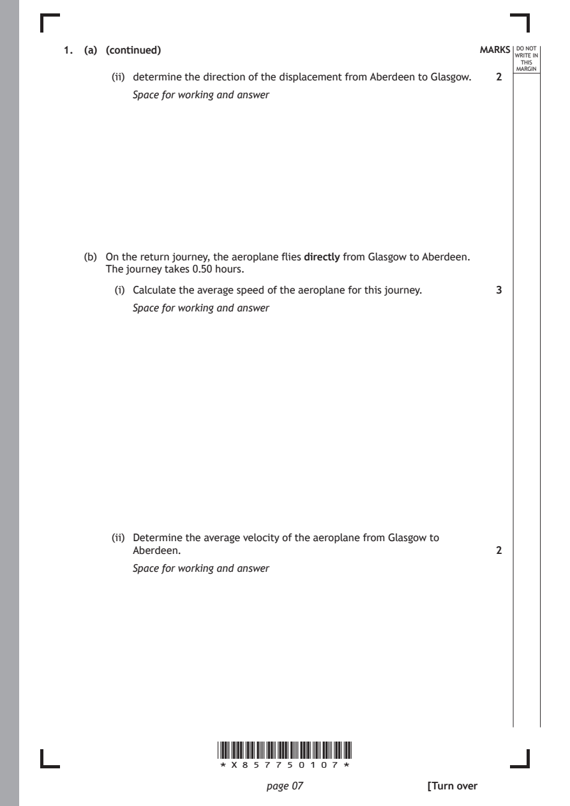
Selectable page text
1. (a) (continued) MARKS _{W}^{D}_{R}^{O}_{I} _{T}^{N}OT
E IN
THIS
ARGIN
(ii) determine the direction of the displacement from Aberdeen to Glasgow. 2 ^{M}
Space for working and answer
(b) On the return journey, the aeroplane flies directly from Glasgow to Aberdeen.
The journey takes 0.50 hours.
(i) Calculate the average speed of the aeroplane for this journey. 3
Space for working and answer
(ii) Determine the average velocity of the aeroplane from Glasgow to
Aberdeen. 2
Space for working and answer
*X857750107*
page 07 [Turn overPDF page 8
Section 2, Question 2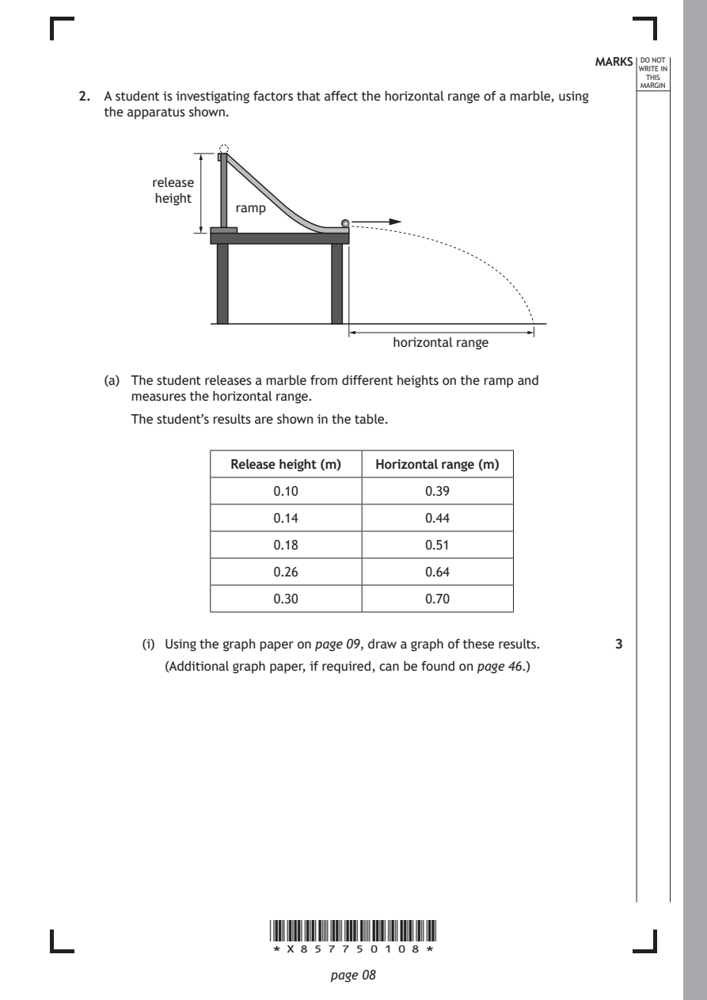
Selectable page text
MARKS _{W}^{D}_{R}^{O}_{I} _{T}^{N}OT
E IN
THIS
MARGIN
2. A student is investigating factors that affect the horizontal range of a marble, using
the apparatus shown.
release
height
ramp
horizontal range
(a) The student releases a marble from different heights on the ramp and
measures the horizontal range.
The student’s results are shown in the table.
Release height (m) Horizontal range (m)
0.10 0.39
0.14 0.44
0.18 0.51
0.26 0.64
0.30 0.70
(i) Using the graph paper on page 09, draw a graph of these results. 3
(Additional graph paper, if required, can be found on page 46.)
*X857750108*
page 08PDF page 9
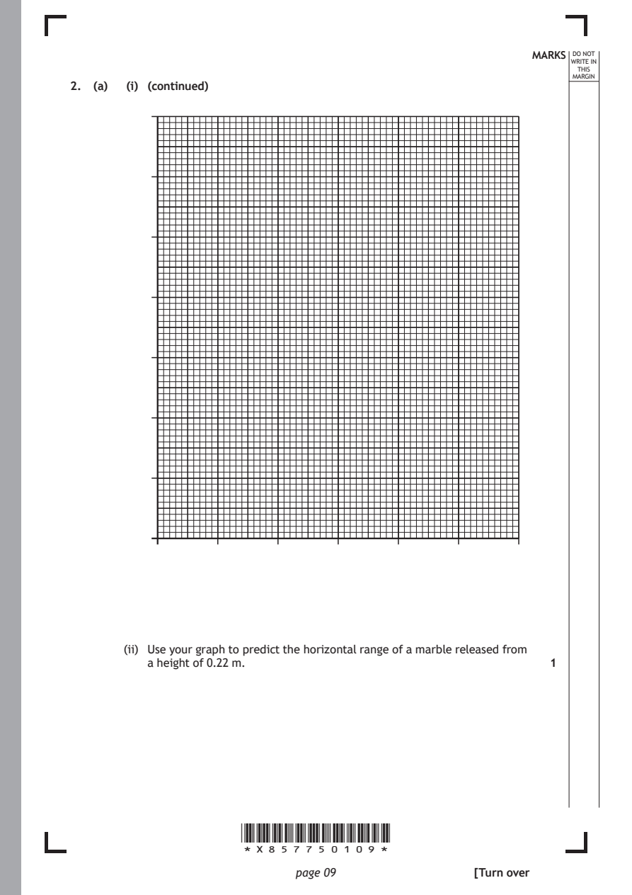
Selectable page text
MARKS _{W}^{D}_{R}^{O}_{I} _{T}^{N}OT
E IN
THIS
MARGIN
2. (a) (i) (continued)
(ii) Use your graph to predict the horizontal range of a marble released from
a height of 0.22 m. 1
*X857750109*
page 09 [Turn overPDF page 10
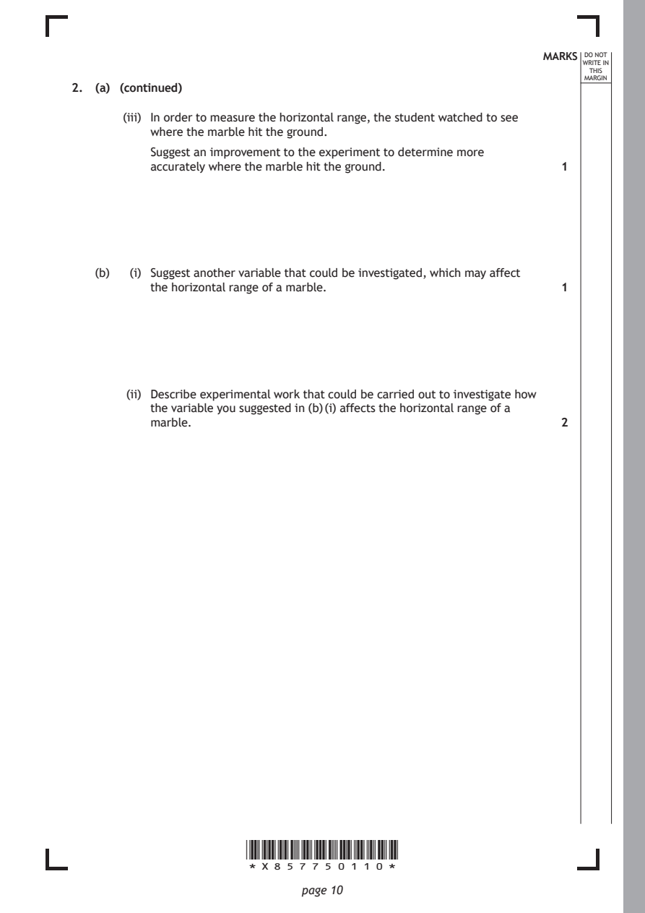
Selectable page text
MARKS _{W}^{D}_{R}^{O}_{I} _{T}^{N}OT
E IN
THIS
MARGIN
2. (a) (continued)
(iii) In order to measure the horizontal range, the student watched to see
where the marble hit the ground.
Suggest an improvement to the experiment to determine more
accurately where the marble hit the ground. 1
(b) (i) Suggest another variable that could be investigated, which may affect
the horizontal range of a marble. 1
(ii) Describe experimental work that could be carried out to investigate how
the variable you suggested in (b) (i) affects the horizontal range of a
marble. 2
*X857750110*
page 10PDF page 11

Selectable page text
[Turn over for next question
DO NOT WRITE ON THIS PAGE
*X857750111*
page 11PDF page 12
Section 2, Question 3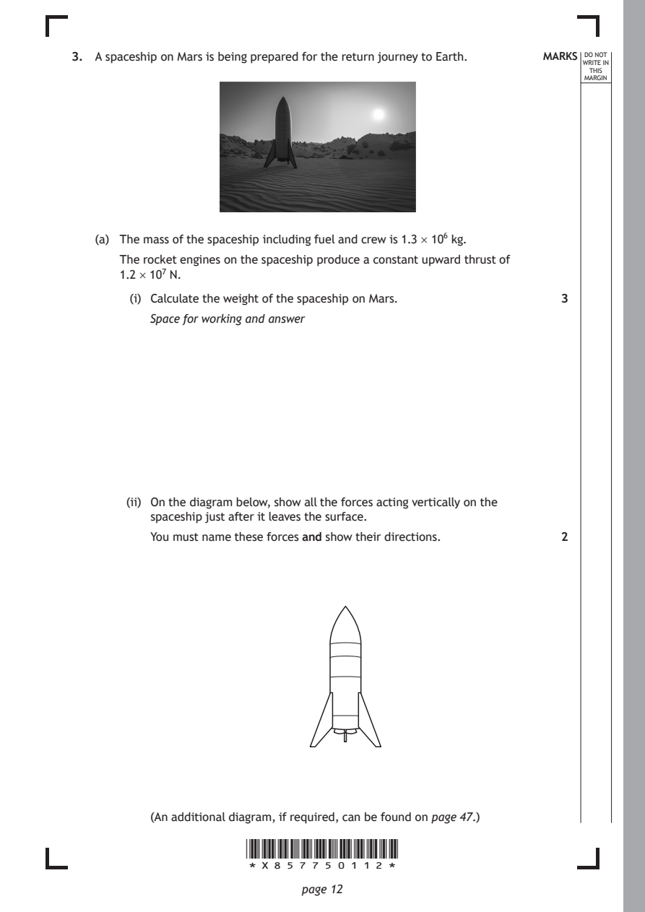
Selectable page text
3. A spaceship on Mars is being prepared for the return journey to Earth. MARKS _{W}^{D}_{R}^{O}_{I} _{T}^{N}OT
E IN
THIS
MARGIN
(a) The mass of the spaceship including fuel and crew is 1.3 × 10⁶ kg.
The rocket engines on the spaceship produce a constant upward thrust of
1.2 × 10⁷ N.
(i) Calculate the weight of the spaceship on Mars. 3
Space for working and answer
(ii) On the diagram below, show all the forces acting vertically on the
spaceship just after it leaves the surface.
You must name these forces and show their directions. 2
(An additional diagram, if required, can be found on page 47.)
*X857750112*
page 12PDF page 13
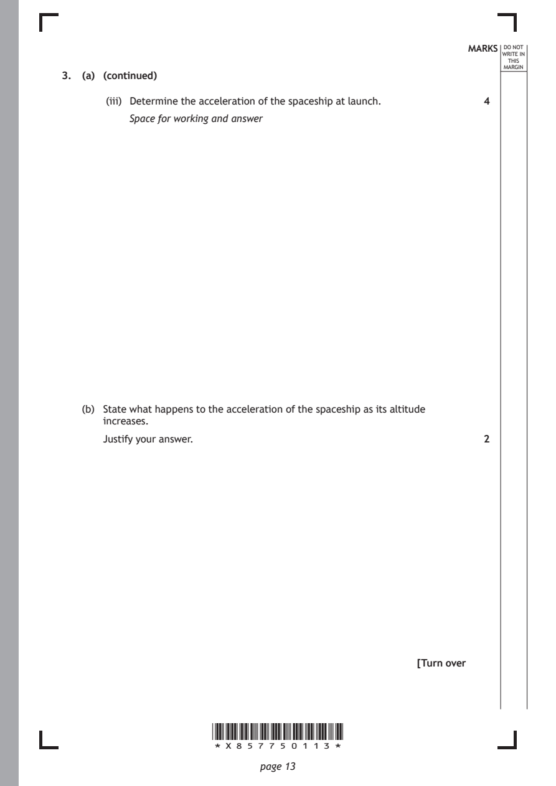
Selectable page text
MARKS _{W}^{D}_{R}^{O}_{I} _{T}^{N}OT
E IN
THIS
MARGIN
3. (a) (continued)
(iii) Determine the acceleration of the spaceship at launch. 4
Space for working and answer
(b) State what happens to the acceleration of the spaceship as its altitude
increases.
Justify your answer. 2
[Turn over
*X857750113*
page 13PDF page 14
Section 2, Question 4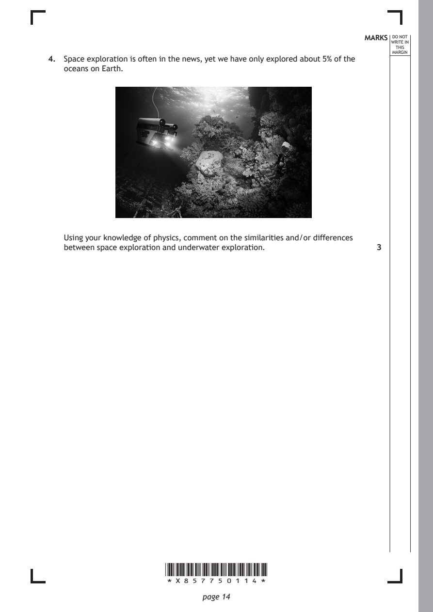
Selectable page text
MARKS _{W}^{D}_{R}^{O}_{I} _{T}^{N}OT
E IN
THIS
MARGIN
4. Space exploration is often in the news, yet we have only explored about 5% of the
oceans on Earth.
Using your knowledge of physics, comment on the similarities and/or differences
between space exploration and underwater exploration. 3
*X857750114*
page 14PDF page 15
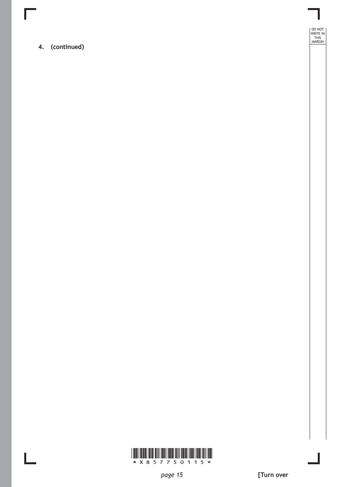
Selectable page text
DO NOT
WRITE IN
THIS
MARGIN
4. (continued)
*X857750115*
page 15 [Turn overPDF page 16
Section 2, Question 5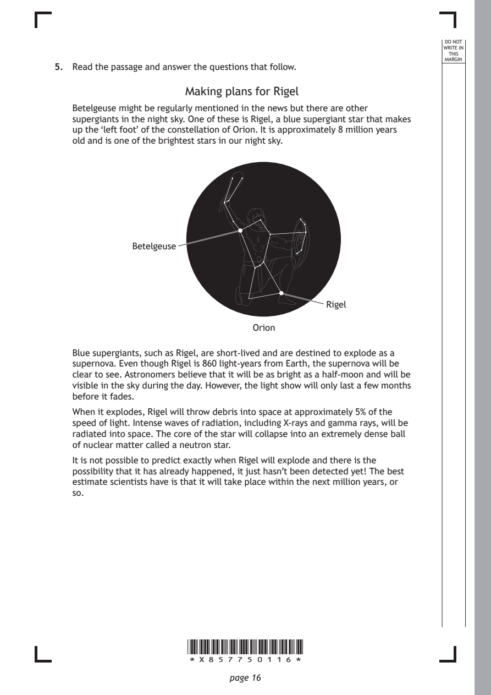
Selectable page text
DO NOT
WRITE IN
THIS
MARGIN
5. Read the passage and answer the questions that follow.
Making plans for Rigel
Betelgeuse might be regularly mentioned in the news but there are other
supergiants in the night sky. One of these is Rigel, a blue supergiant star that makes
up the ‘left foot’ of the constellation of Orion. It is approximately 8 million years
old and is one of the brightest stars in our night sky.
Betelgeuse
Rigel
Orion
Blue supergiants, such as Rigel, are short-lived and are destined to explode as a
supernova. Even though Rigel is 860 light-years from Earth, the supernova will be
clear to see. Astronomers believe that it will be as bright as a half-moon and will be
visible in the sky during the day. However, the light show will only last a few months
before it fades.
When it explodes, Rigel will throw debris into space at approximately 5% of the
speed of light. Intense waves of radiation, including X-rays and gamma rays, will be
radiated into space. The core of the star will collapse into an extremely dense ball
of nuclear matter called a neutron star.
It is not possible to predict exactly when Rigel will explode and there is the
possibility that it has already happened, it just hasn’t been detected yet! The best
estimate scientists have is that it will take place within the next million years, or
so.
*X857750116*
page 16PDF page 17
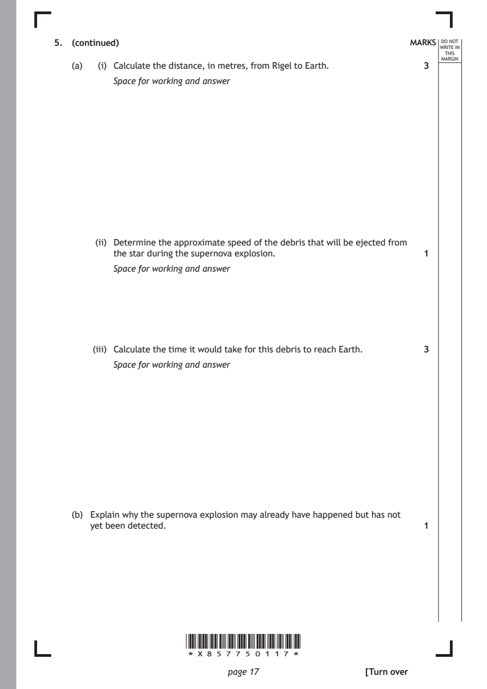
Selectable page text
5. (continued) MARKS _{W}^{D}_{R}^{O}_{I} _{T}^{N}OT
E IN
THIS
ARGIN
(a) (i) Calculate the distance, in metres, from Rigel to Earth. 3 ^{M}
Space for working and answer
(ii) Determine the approximate speed of the debris that will be ejected from
the star during the supernova explosion. 1
Space for working and answer
(iii) Calculate the time it would take for this debris to reach Earth. 3
Space for working and answer
(b) Explain why the supernova explosion may already have happened but has not
yet been detected. 1
*X857750117*
page 17 [Turn overPDF page 18
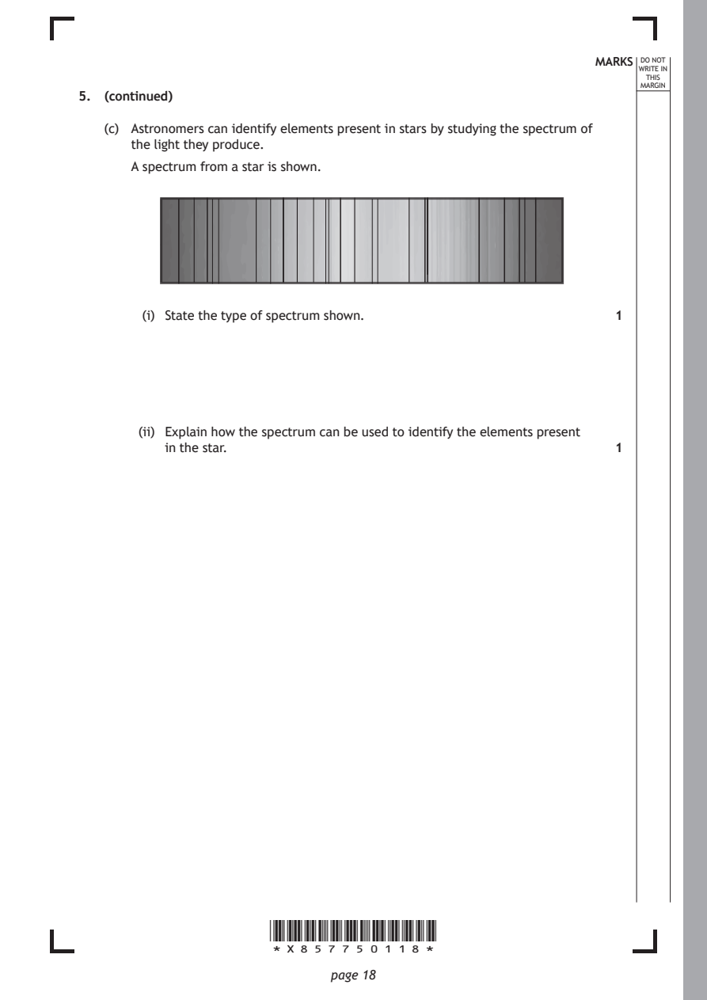
Selectable page text
MARKS _{W}^{D}_{R}^{O}_{I} _{T}^{N}OT
E IN
THIS
MARGIN
5. (continued)
(c) Astronomers can identify elements present in stars by studying the spectrum of
the light they produce.
A spectrum from a star is shown.
(i) State the type of spectrum shown. 1
(ii) Explain how the spectrum can be used to identify the elements present
in the star. 1
*X857750118*
page 18PDF page 19
Selectable page text
[Turn over for next question
DO NOT WRITE ON THIS PAGE
*X857750119*
page 19PDF page 20
Section 2, Question 6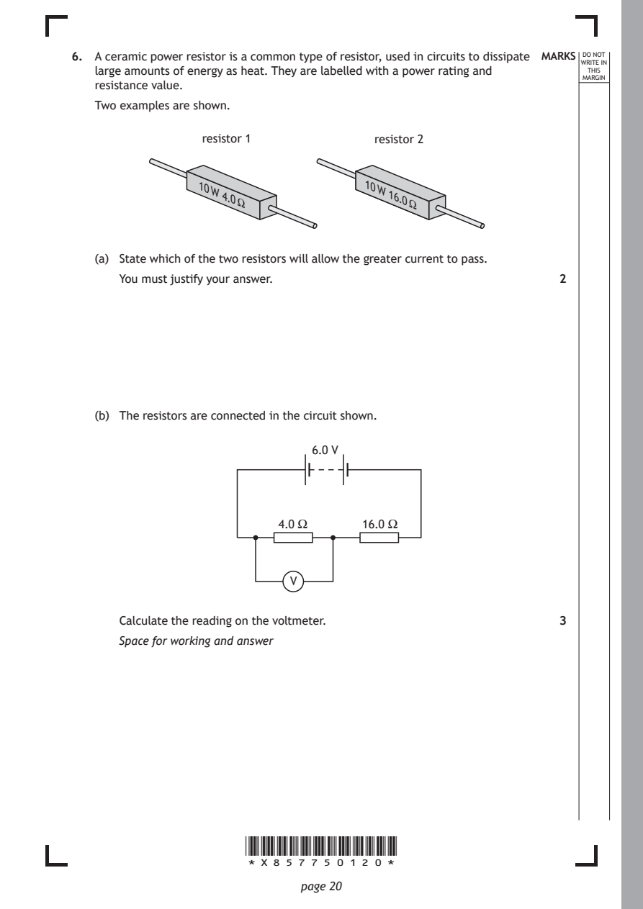
Selectable page text
6. A ceramic power resistor is a common type of resistor, used in circuits to dissipate MARKS _{W}^{D}_{R}^{O}_{I} _{T}^{N}OT
E IN
large amounts of energy as heat. They are labelled with a power rating and THIS
MARGIN
resistance value.
Two examples are shown.
*X857750120*
page 20
1 0 W
4 .0
Ω
1 0 W
1 6 .0
Ω
resistor 1 resistor 2
(a) State which of the two resistors will allow the greater current to pass.
You must justify your answer. 2
(b) The resistors are connected in the circuit shown.
6.0 V
4.0 Ω 16.0 Ω
V
Calculate the reading on the voltmeter. 3
Space for working and answerPDF page 21
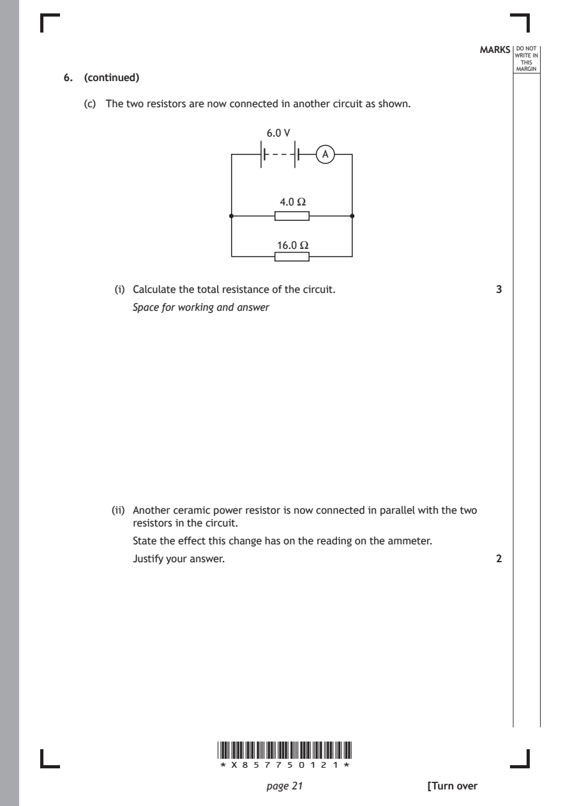
Selectable page text
MARKS _{W}^{D}_{R}^{O}_{I} _{T}^{N}OT
E IN
THIS
MARGIN
6. (continued)
(c) The two resistors are now connected in another circuit as shown.
6.0 V
A
4.0 Ω
16.0 Ω
(i) Calculate the total resistance of the circuit. 3
Space for working and answer
(ii) Another ceramic power resistor is now connected in parallel with the two
resistors in the circuit.
State the effect this change has on the reading on the ammeter.
Justify your answer. 2
*X857750121*
page 21 [Turn overPDF page 22
Section 2, Question 7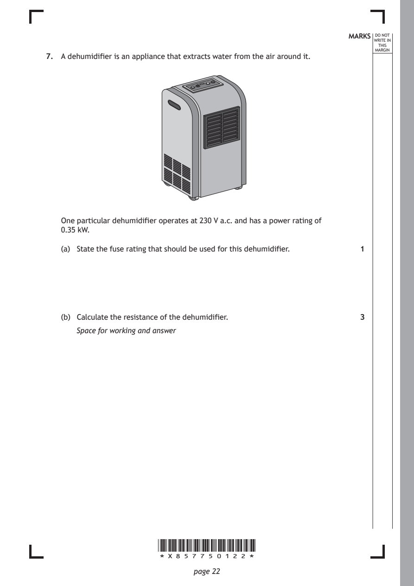
Selectable page text
MARKS _{W}^{D}_{R}^{O}_{I} _{T}^{N}OT
E IN
THIS
MARGIN
7. A dehumidifier is an appliance that extracts water from the air around it.
One particular dehumidifier operates at 230 V a.c. and has a power rating of
0.35 kW.
(a) State the fuse rating that should be used for this dehumidifier. 1
(b) Calculate the resistance of the dehumidifier. 3
Space for working and answer
*X857750122*
page 22PDF page 23
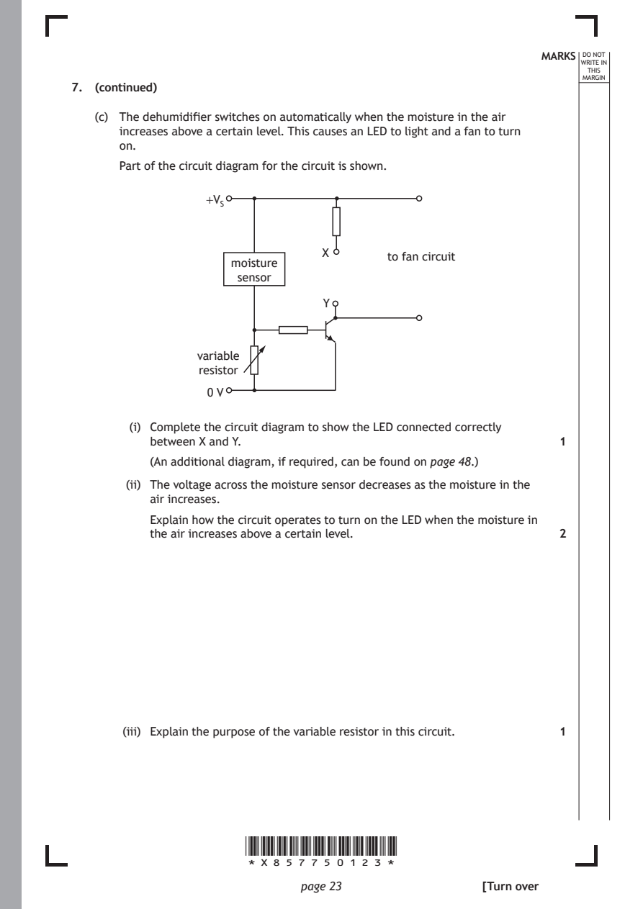
Selectable page text
MARKS _{W}^{D}_{R}^{O}_{I} _{T}^{N}OT
E IN
THIS
MARGIN
7. (continued)
(c) The dehumidifier switches on automatically when the moisture in the air
increases above a certain level. This causes an LED to light and a fan to turn
on.
Part of the circuit diagram for the circuit is shown.
+V_{S}
X to fan circuit
moisture
sensor
Y
variable
resistor
0 V
(i) Complete the circuit diagram to show the LED connected correctly
between X and Y. 1
(An additional diagram, if required, can be found on page 48.)
(ii) The voltage across the moisture sensor decreases as the moisture in the
air increases.
Explain how the circuit operates to turn on the LED when the moisture in
the air increases above a certain level. 2
(iii) Explain the purpose of the variable resistor in this circuit. 1
*X857750123*
page 23 [Turn overPDF page 24
Section 2, Question 8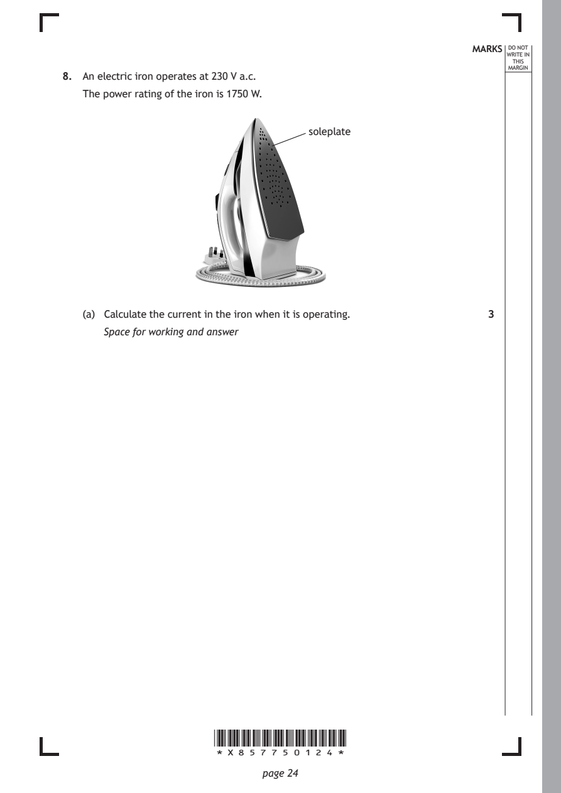
Selectable page text
MARKS _{W}^{D}_{R}^{O}_{I} _{T}^{N}OT
E IN
THIS
MARGIN
8. An electric iron operates at 230 V a.c.
The power rating of the iron is 1750 W.
soleplate
(a) Calculate the current in the iron when it is operating. 3
Space for working and answer
*X857750124*
page 24PDF page 25
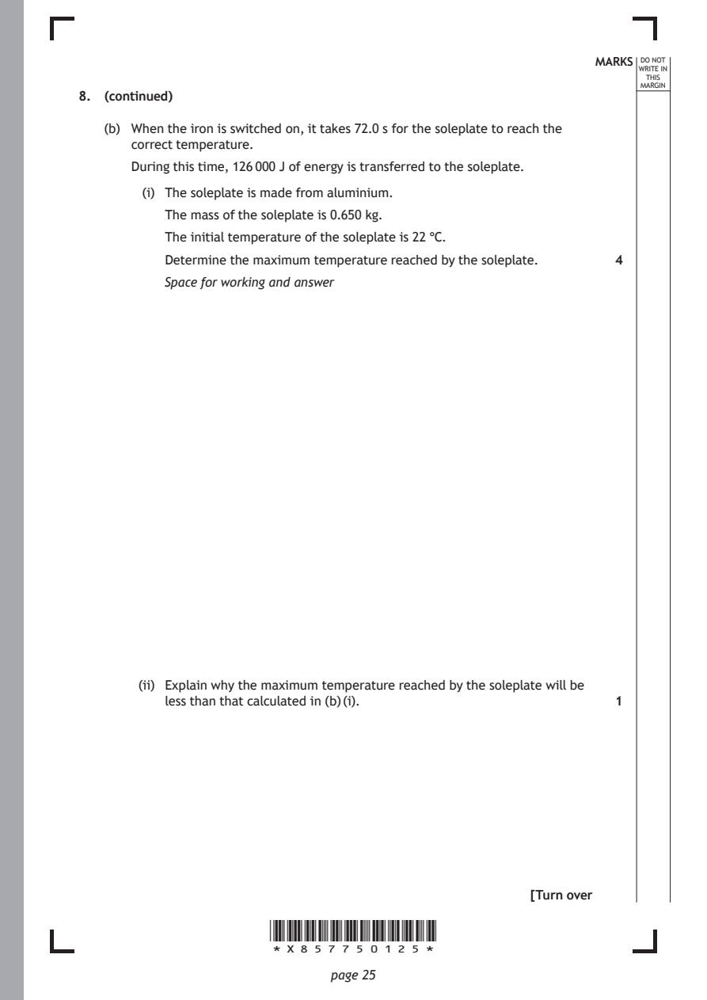
Selectable page text
MARKS _{W}^{D}_{R}^{O}_{I} _{T}^{N}OT
E IN
THIS
MARGIN
8. (continued)
(b) When the iron is switched on, it takes 72.0 s for the soleplate to reach the
correct temperature.
During this time, 126 000 J of energy is transferred to the soleplate.
(i) The soleplate is made from aluminium.
The mass of the soleplate is 0.650 kg.
The initial temperature of the soleplate is 22 °C.
Determine the maximum temperature reached by the soleplate. 4
Space for working and answer
(ii) Explain why the maximum temperature reached by the soleplate will be
less than that calculated in (b) (i). 1
[Turn over
*X857750125*
page 25PDF page 26
Section 2, Question 9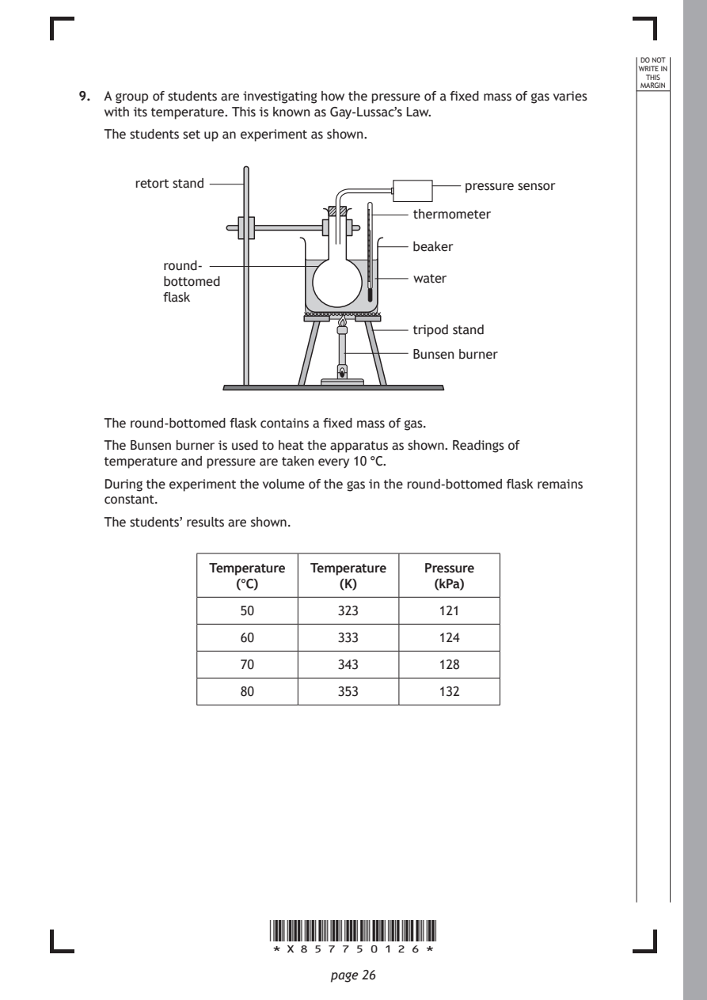
Selectable page text
DO NOT
WRITE IN
THIS
MARGIN
9. A group of students are investigating how the pressure of a fixed mass of gas varies
with its temperature. This is known as Gay-Lussac’s Law.
The students set up an experiment as shown.
retort stand pressure sensor
thermometer
beaker
round-
bottomed water
flask
tripod stand
Bunsen burner
The round-bottomed flask contains a fixed mass of gas.
The Bunsen burner is used to heat the apparatus as shown. Readings of
temperature and pressure are taken every 10 °C.
During the experiment the volume of the gas in the round-bottomed flask remains
constant.
The students’ results are shown.
Temperature Temperature Pressure
(°C) (K) (kPa)
50 323 121
60 333 124
70 343 128
80 353 132
*X857750126*
page 26PDF page 27
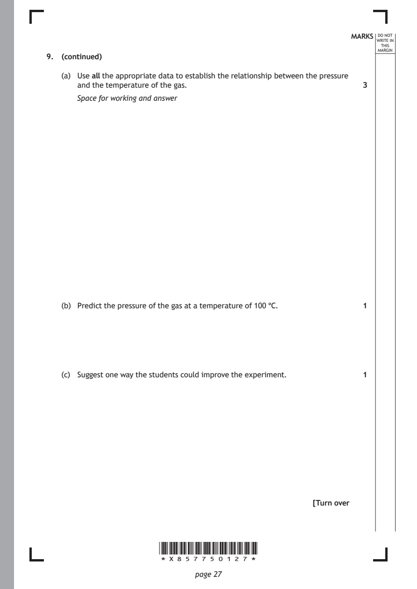
Selectable page text
MARKS _{W}^{D}_{R}^{O}_{I} _{T}^{N}OT
E IN
THIS
MARGIN
9. (continued)
(a) Use all the appropriate data to establish the relationship between the pressure
and the temperature of the gas. 3
Space for working and answer
(b) Predict the pressure of the gas at a temperature of 100 °C. 1
(c) Suggest one way the students could improve the experiment. 1
[Turn over
*X857750127*
page 27PDF page 28
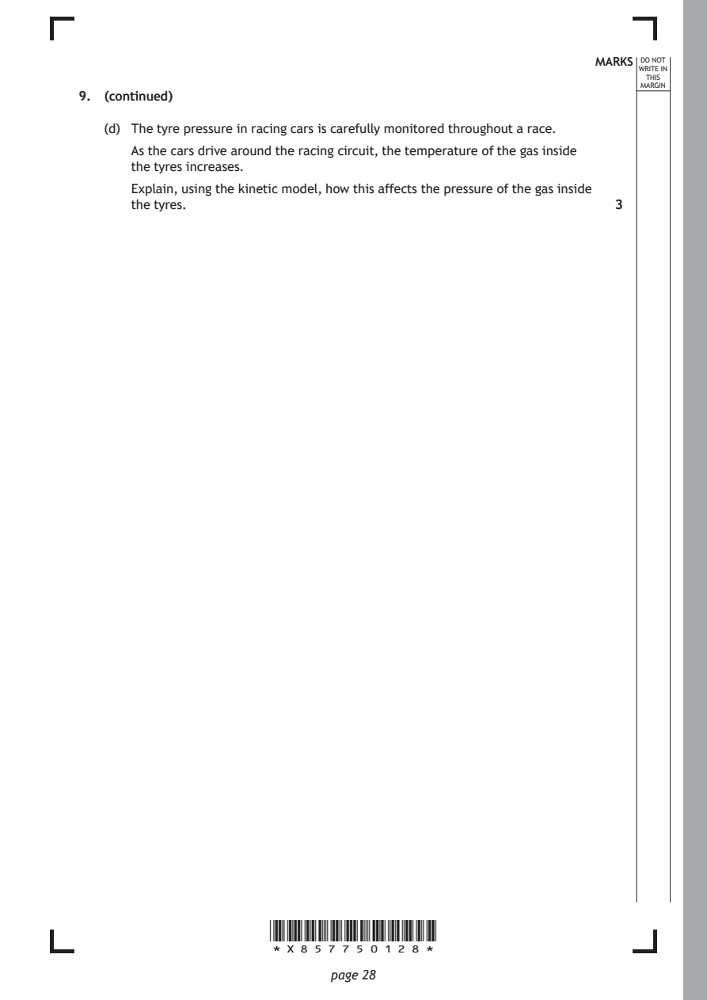
Selectable page text
MARKS _{W}^{D}_{R}^{O}_{I} _{T}^{N}OT
E IN
THIS
MARGIN
9. (continued)
(d) The tyre pressure in racing cars is carefully monitored throughout a race.
As the cars drive around the racing circuit, the temperature of the gas inside
the tyres increases.
Explain, using the kinetic model, how this affects the pressure of the gas inside
the tyres. 3
*X857750128*
page 28PDF page 29
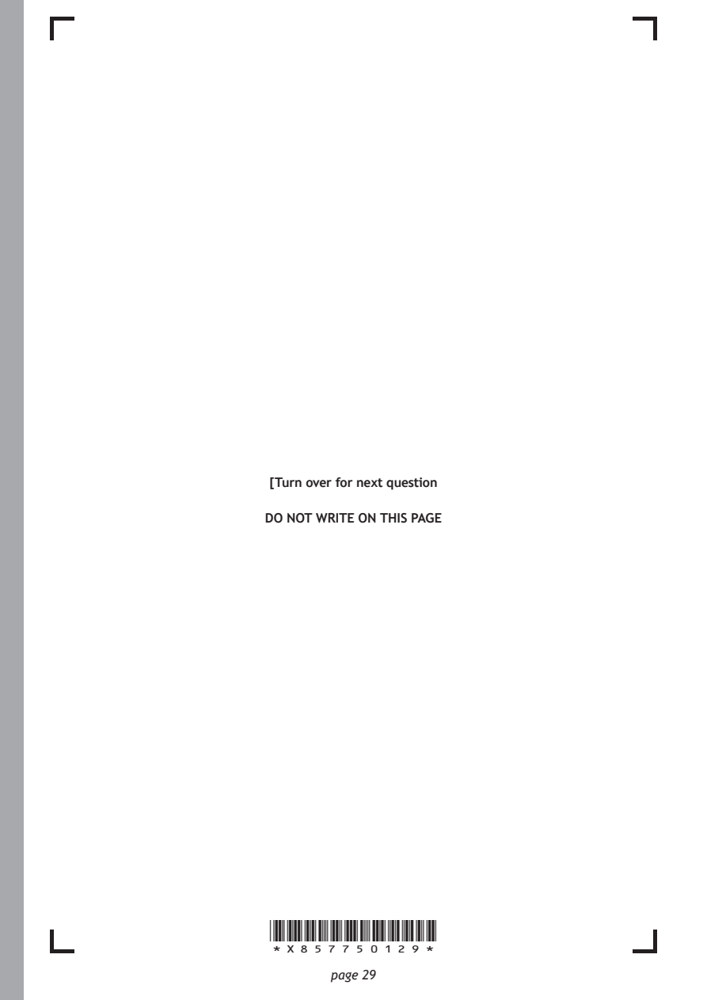
Selectable page text
[Turn over for next question
DO NOT WRITE ON THIS PAGE
*X857750129*
page 29PDF page 30
Section 2, Question 10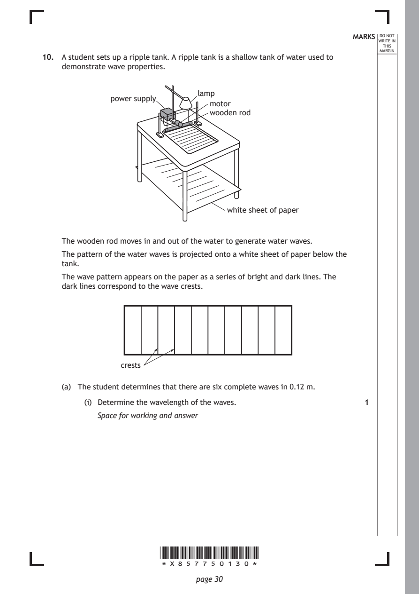
Selectable page text
MARKS _{W}^{D}_{R}^{O}_{I} _{T}^{N}OT
E IN
THIS
MARGIN
10. A student sets up a ripple tank. A ripple tank is a shallow tank of water used to
demonstrate wave properties.
lamp
power supply
motor
wooden rod
white sheet of paper
The wooden rod moves in and out of the water to generate water waves.
The pattern of the water waves is projected onto a white sheet of paper below the
tank.
The wave pattern appears on the paper as a series of bright and dark lines. The
dark lines correspond to the wave crests.
crests
(a) The student determines that there are six complete waves in 0.12 m.
(i) Determine the wavelength of the waves. 1
Space for working and answer
*X857750130*
page 30PDF page 31
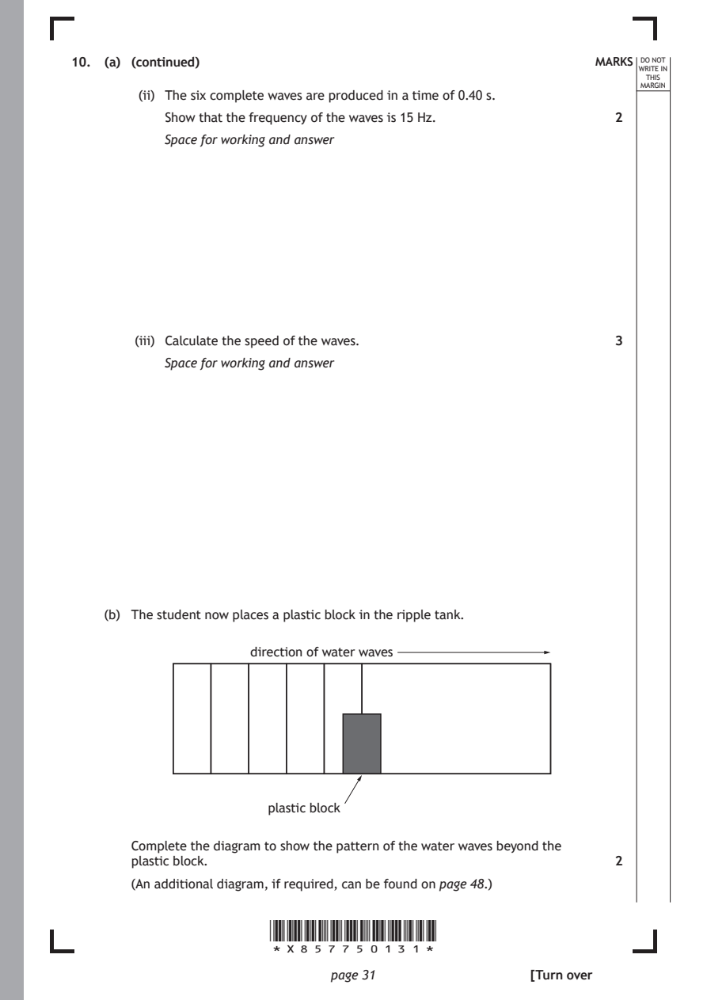
Selectable page text
10. (a) (continued) MARKS _{W}^{D}_{R}^{O}_{I} _{T}^{N}OT
E IN
THIS
MARGIN
(ii) The six complete waves are produced in a time of 0.40 s.
Show that the frequency of the waves is 15 Hz. 2
Space for working and answer
(iii) Calculate the speed of the waves. 3
Space for working and answer
(b) The student now places a plastic block in the ripple tank.
direction of water waves
plastic block
Complete the diagram to show the pattern of the water waves beyond the
plastic block. 2
(An additional diagram, if required, can be found on page 48.)
*X857750131*
page 31 [Turn overPDF page 32
Section 2, Question 11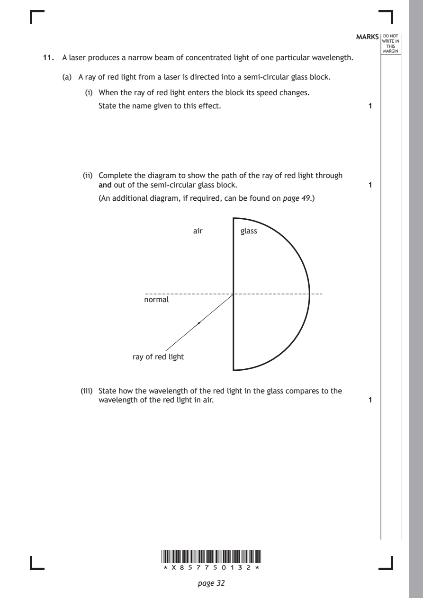
Selectable page text
MARKS _{W}^{D}_{R}^{O}_{I} _{T}^{N}OT
E IN
THIS
MARGIN
11. A laser produces a narrow beam of concentrated light of one particular wavelength.
(a) A ray of red light from a laser is directed into a semi-circular glass block.
(i) When the ray of red light enters the block its speed changes.
State the name given to this effect. 1
(ii) Complete the diagram to show the path of the ray of red light through
and out of the semi-circular glass block. 1
(An additional diagram, if required, can be found on page 49.)
air glass
normal
ray of red light
(iii) State how the wavelength of the red light in the glass compares to the
wavelength of the red light in air. 1
*X857750132*
page 32PDF page 33
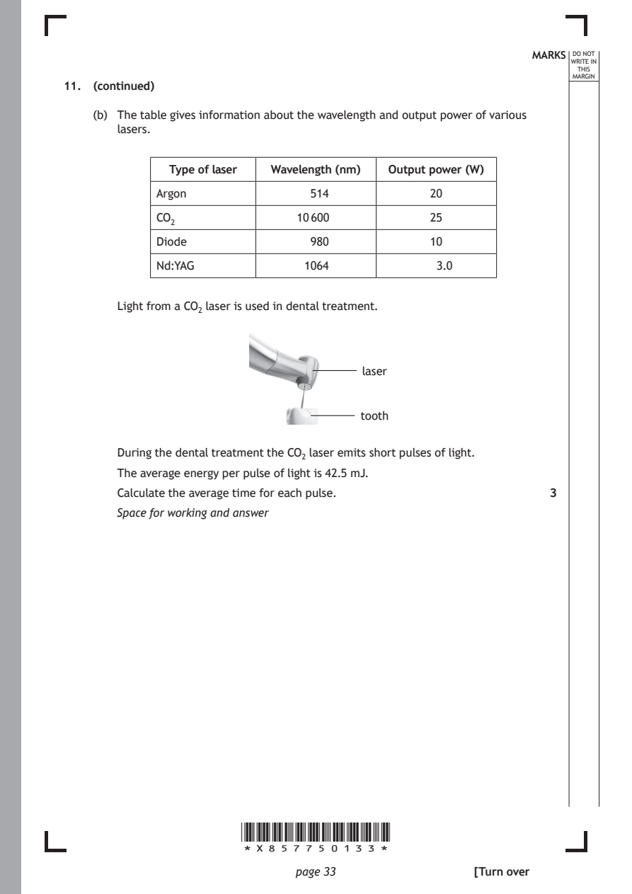
Selectable page text
MARKS _{W}^{D}_{R}^{O}_{I} _{T}^{N}OT
E IN
THIS
MARGIN
11. (continued)
(b) The table gives information about the wavelength and output power of various
lasers.
Type of laser Wavelength (nm) Output power (W)
Argon 514 20
CO₂ 10 600 25
Diode 980 10
Nd:YAG 1064 3.0
Light from a CO₂ laser is used in dental treatment.
laser
tooth
During the dental treatment the CO₂ laser emits short pulses of light.
The average energy per pulse of light is 42.5 mJ.
Calculate the average time for each pulse. 3
Space for working and answer
*X857750133*
page 33 [Turn overPDF page 34
Section 2, Question 12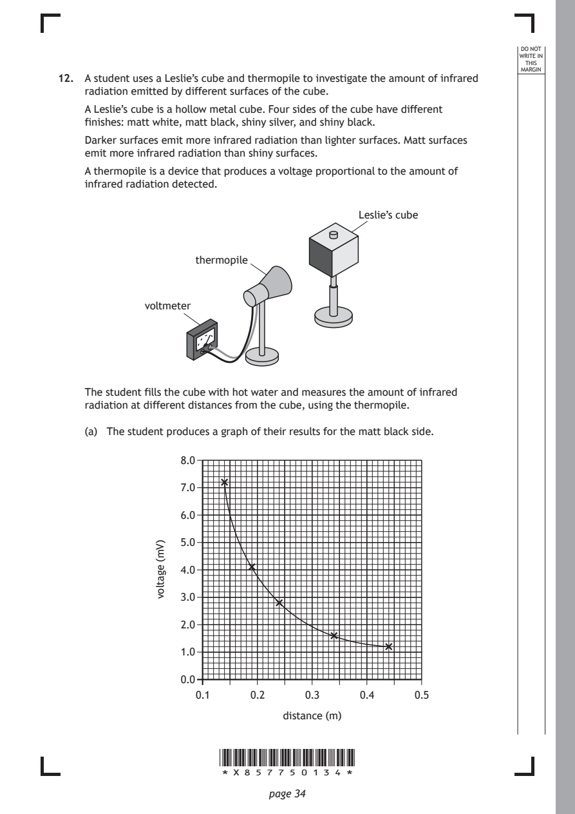
Selectable page text
DO NOT
WRITE IN
THIS
MARGIN
12. A student uses a Leslie’s cube and thermopile to investigate the amount of infrared
radiation emitted by different surfaces of the cube.
A Leslie’s cube is a hollow metal cube. Four sides of the cube have different
finishes: matt white, matt black, shiny silver, and shiny black.
Darker surfaces emit more infrared radiation than lighter surfaces. Matt surfaces
emit more infrared radiation than shiny surfaces.
A thermopile is a device that produces a voltage proportional to the amount of
infrared radiation detected.
Leslie’s cube
thermopile
voltmeter
The student fills the cube with hot water and measures the amount of infrared
radiation at different distances from the cube, using the thermopile.
(a) The student produces a graph of their results for the matt black side.
*X857750134*
page 34
)Vm(
egatlov
8.0
7.0
6.0
5.0
4.0
3.0
2.0
1.0
0.0
0.1 0.2 0.3 0.4 0.5
distance (m)PDF page 35
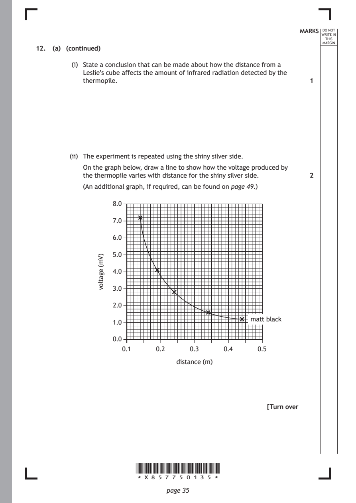
Selectable page text
MARKS _{W}^{D}_{R}^{O}_{I} _{T}^{N}OT
E IN
THIS
MARGIN
12. (a) (continued)
(i) State a conclusion that can be made about how the distance from a
Leslie’s cube affects the amount of infrared radiation detected by the
thermopile.
(ii) The experiment is repeated using the shiny silver side.
On the graph below, draw a line to show how the voltage produced by
the thermopile varies with distance for the shiny silver side.
(An additional graph, if required, can be found on page 49.)
*X857750135*
page 35
)Vm(
egatlov
1
2
8.0
7.0
6.0
5.0
4.0
3.0
2.0
matt black
1.0
0.0
0.1 0.2 0.3 0.4 0.5
distance (m)
[Turn overPDF page 36
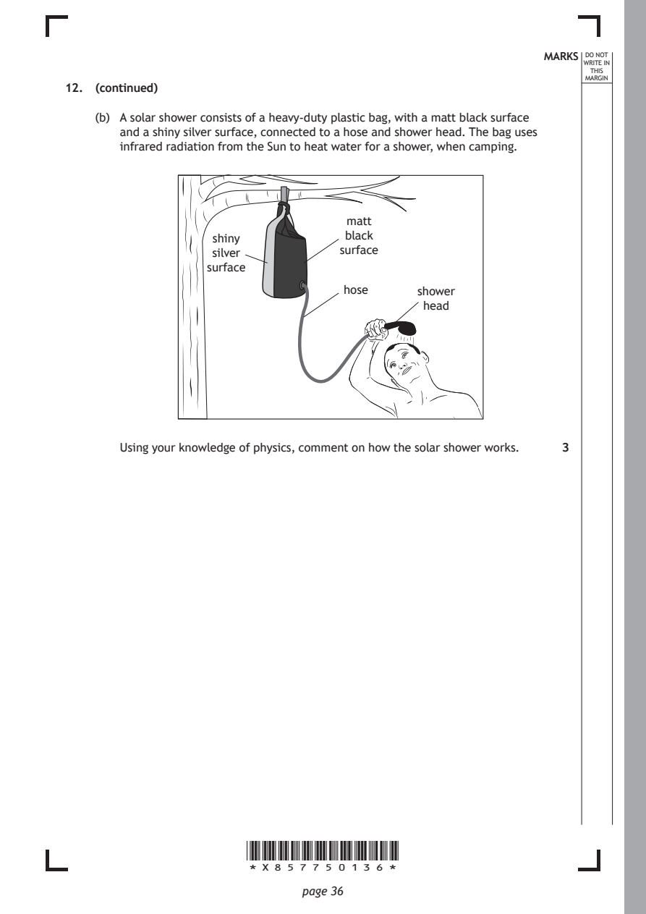
Selectable page text
MARKS _{W}^{D}_{R}^{O}_{I} _{T}^{N}OT
E IN
THIS
MARGIN
12. (continued)
(b) A solar shower consists of a heavy-duty plastic bag, with a matt black surface
and a shiny silver surface, connected to a hose and shower head. The bag uses
infrared radiation from the Sun to heat water for a shower, when camping.
matt
shiny black
silver surface
surface
hose shower
head
Using your knowledge of physics, comment on how the solar shower works. 3
*X857750136*
page 36PDF page 37
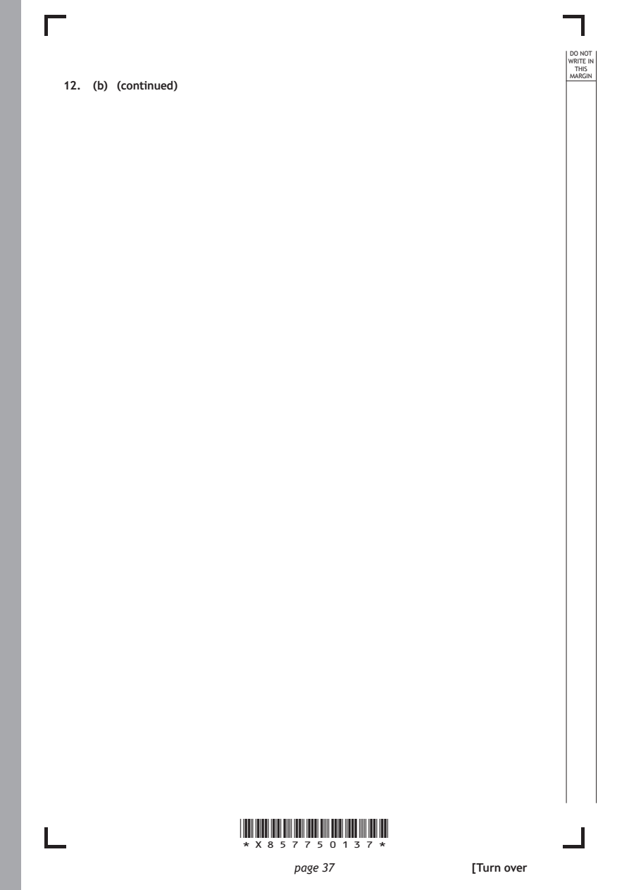
Selectable page text
DO NOT
WRITE IN
THIS
MARGIN
12. (b) (continued)
*X857750137*
page 37 [Turn overPDF page 38
Section 2, Question 13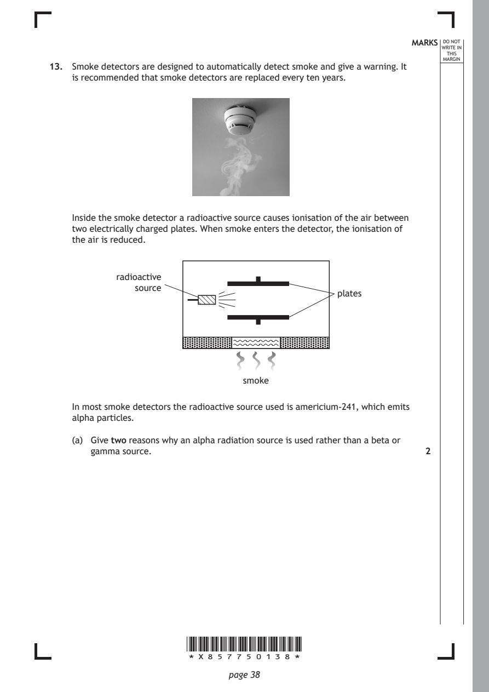
Selectable page text
MARKS _{W}^{D}_{R}^{O}_{I} _{T}^{N}OT
E IN
THIS
MARGIN
13. Smoke detectors are designed to automatically detect smoke and give a warning. It
is recommended that smoke detectors are replaced every ten years.
Inside the smoke detector a radioactive source causes ionisation of the air between
two electrically charged plates. When smoke enters the detector, the ionisation of
the air is reduced.
radioactive
source
plates
smoke
In most smoke detectors the radioactive source used is americium-241, which emits
alpha particles.
(a) Give two reasons why an alpha radiation source is used rather than a beta or
gamma source. 2
*X857750138*
page 38PDF page 39
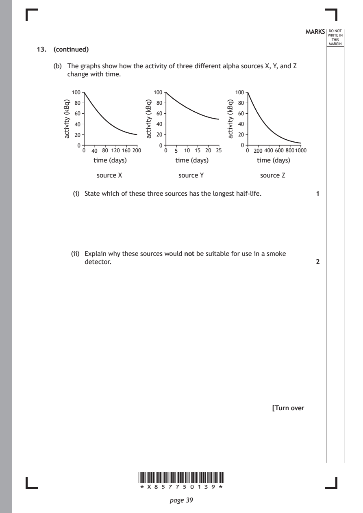
Selectable page text
MARKS _{W}^{D}_{R}^{O}_{I} _{T}^{N}OT
E IN
THIS
MARGIN
13. (continued)
(b) The graphs show how the activity of three different alpha sources X, Y, and Z
change with time.
*X857750139*
page 39
)qBk(
ytivitca
100
80
60
40
20
0
0 40 80 120 160 200
time (days)
source X
)qBk(
ytivitca
100
80
60
40
20
0
0 5 10 15 20 25
time (days)
source Y
)qBk(
ytivitca
100
80
60
40
20
0
0 200 400 600 8001000
time (days)
source Z
(i) State which of these three sources has the longest half-life. 1
(ii) Explain why these sources would not be suitable for use in a smoke
detector. 2
[Turn overPDF page 40
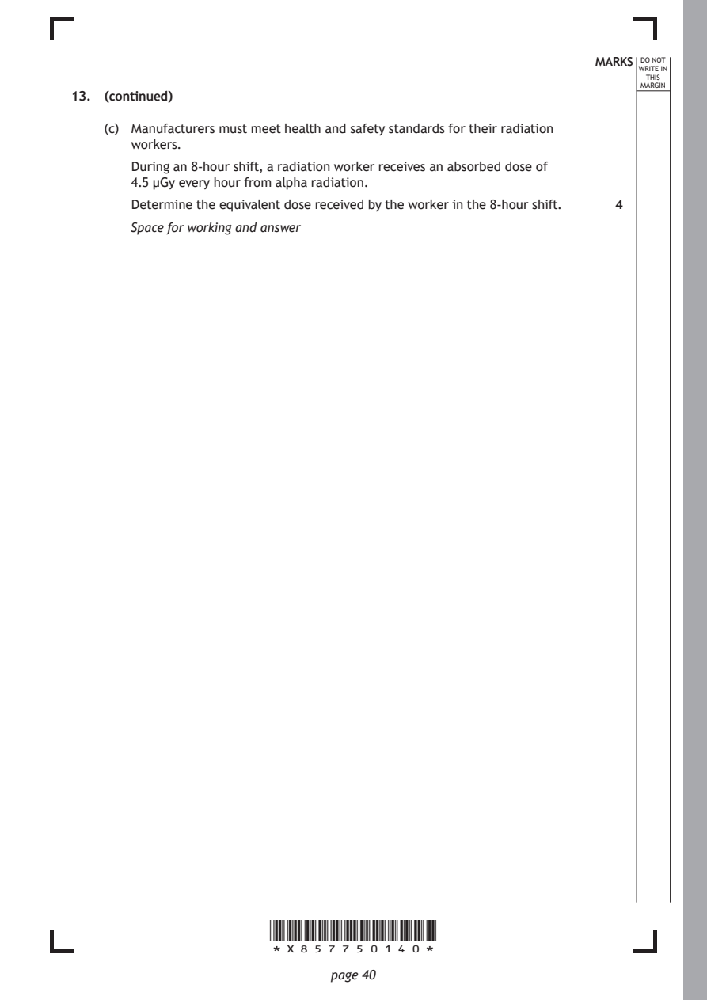
Selectable page text
MARKS _{W}^{D}_{R}^{O}_{I} _{T}^{N}OT
E IN
THIS
MARGIN
13. (continued)
(c) Manufacturers must meet health and safety standards for their radiation
workers.
During an 8-hour shift, a radiation worker receives an absorbed dose of
4.5 µGy every hour from alpha radiation.
Determine the equivalent dose received by the worker in the 8-hour shift. 4
Space for working and answer
*X857750140*
page 40PDF page 41
Selectable page text
[Turn over for next question
DO NOT WRITE ON THIS PAGE
*X857750141*
page 41PDF page 42
Section 2, Question 14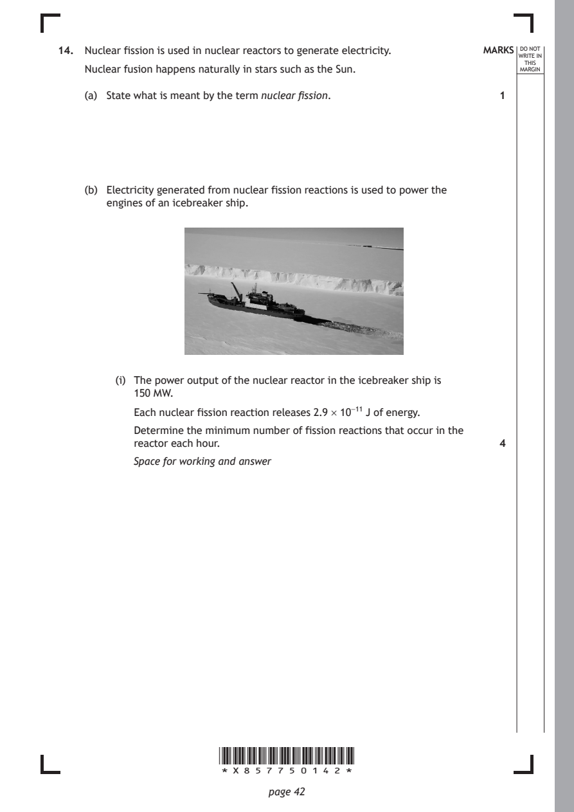
Selectable page text
14. Nuclear fission is used in nuclear reactors to generate electricity. MARKS _{W}^{D}_{R}^{O}_{I} _{T}^{N}OT
E IN
THIS
Nuclear fusion happens naturally in stars such as the Sun. MARGIN
(a) State what is meant by the term nuclear fission. 1
(b) Electricity generated from nuclear fission reactions is used to power the
engines of an icebreaker ship.
(i) The power output of the nuclear reactor in the icebreaker ship is
150 MW.
Each nuclear fission reaction releases 2.9 × 10⁻¹¹ J of energy.
Determine the minimum number of fission reactions that occur in the
reactor each hour. 4
Space for working and answer
*X857750142*
page 42PDF page 43
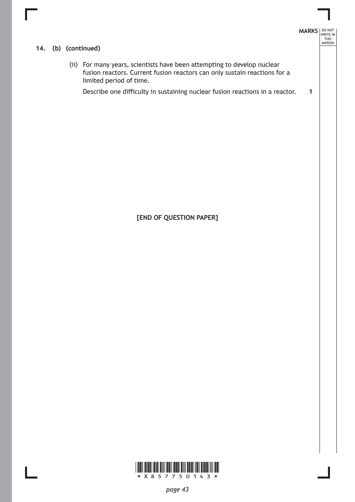
Selectable page text
MARKS _{W}^{D}_{R}^{O}_{I} _{T}^{N}OT
E IN
THIS
MARGIN
14. (b) (continued)
(ii) For many years, scientists have been attempting to develop nuclear
fusion reactors. Current fusion reactors can only sustain reactions for a
limited period of time.
Describe one difficulty in sustaining nuclear fusion reactions in a reactor. 1
[END OF QUESTION PAPER]
*X857750143*
page 43PDF page 44
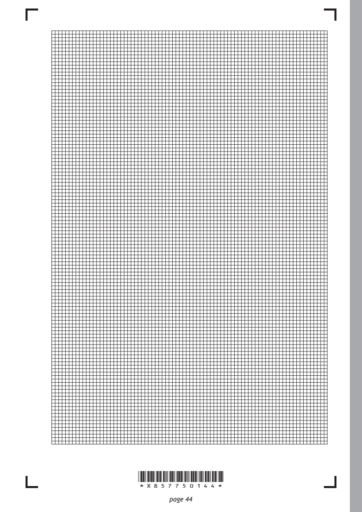
Selectable page text
*X857750144*
page 44PDF page 45
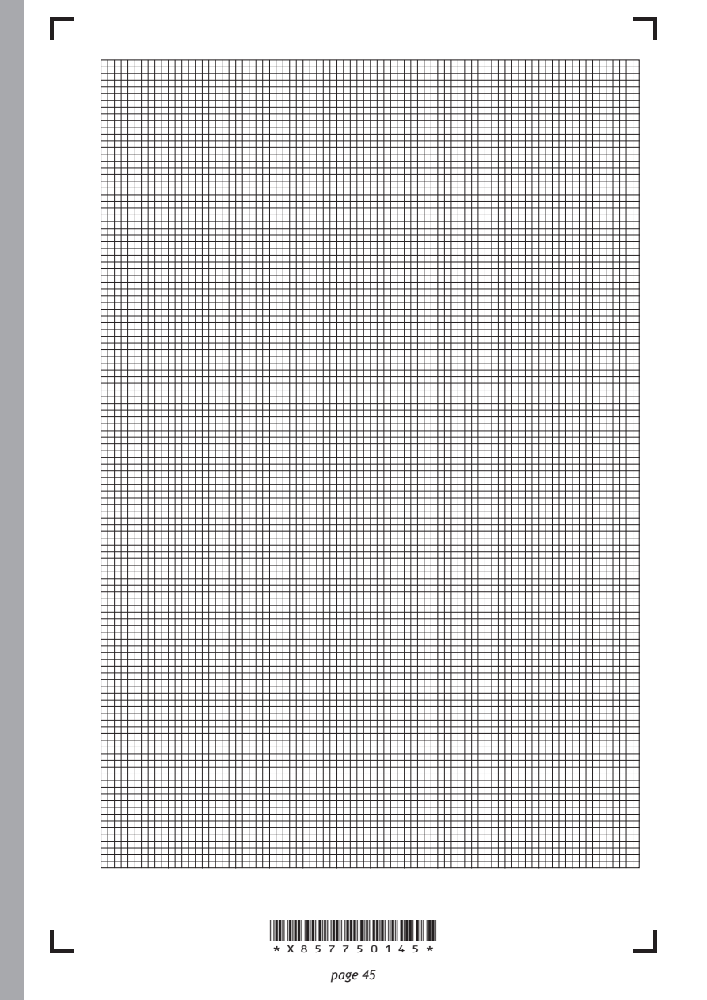
Selectable page text
*X857750145*
page 45PDF page 46
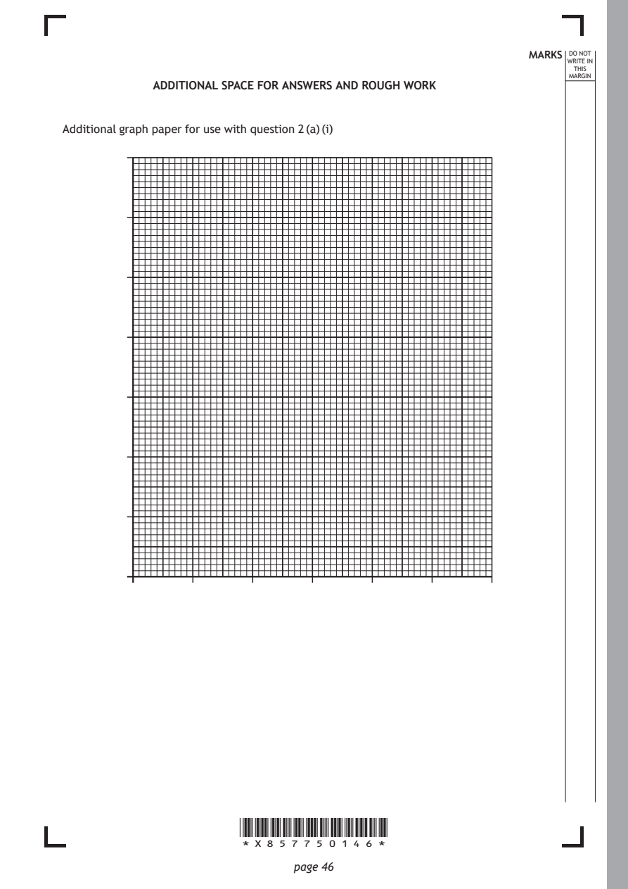
Selectable page text
MARKS _{W}^{D}_{R}^{O}_{I} _{T}^{N}OT
E IN
THIS
MARGIN
ADDITIONAL SPACE FOR ANSWERS AND ROUGH WORK
Additional graph paper for use with question 2 (a) (i)
*X857750146*
page 46PDF page 47
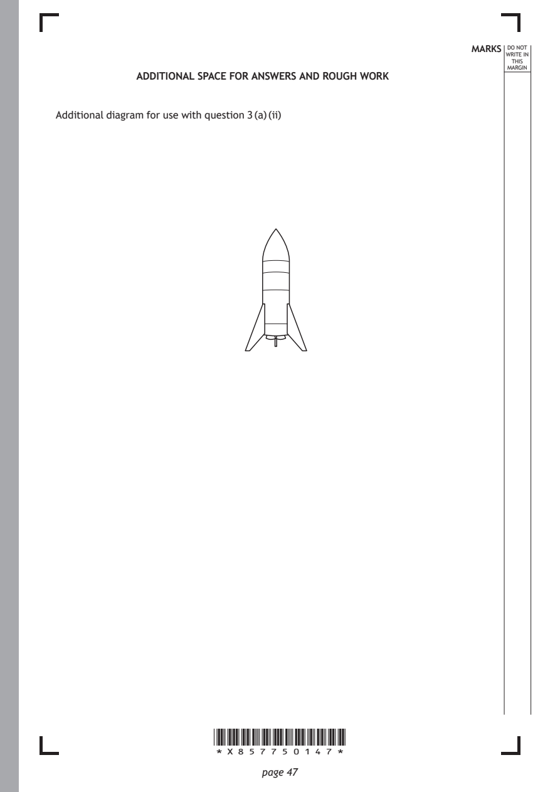
Selectable page text
MARKS _{W}^{D}_{R}^{O}_{I} _{T}^{N}OT
E IN
THIS
MARGIN
ADDITIONAL SPACE FOR ANSWERS AND ROUGH WORK
Additional diagram for use with question 3 (a) (ii)
*X857750147*
page 47PDF page 48
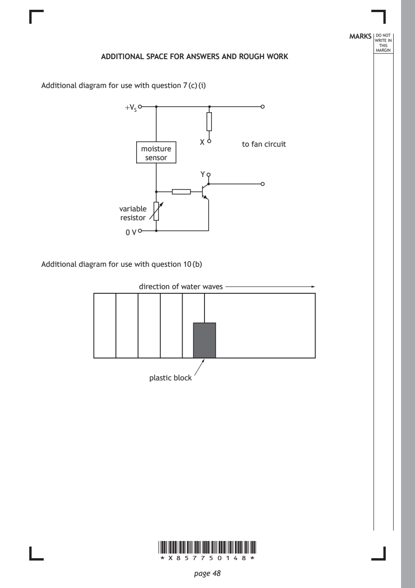
Selectable page text
MARKS _{W}^{D}_{R}^{O}_{I} _{T}^{N}OT
E IN
THIS
MARGIN
ADDITIONAL SPACE FOR ANSWERS AND ROUGH WORK
Additional diagram for use with question 7 (c) (i)
+V_{S}
X to fan circuit
moisture
sensor
Y
variable
resistor
0 V
Additional diagram for use with question 10 (b)
direction of water waves
plastic block
*X857750148*
page 48PDF page 49
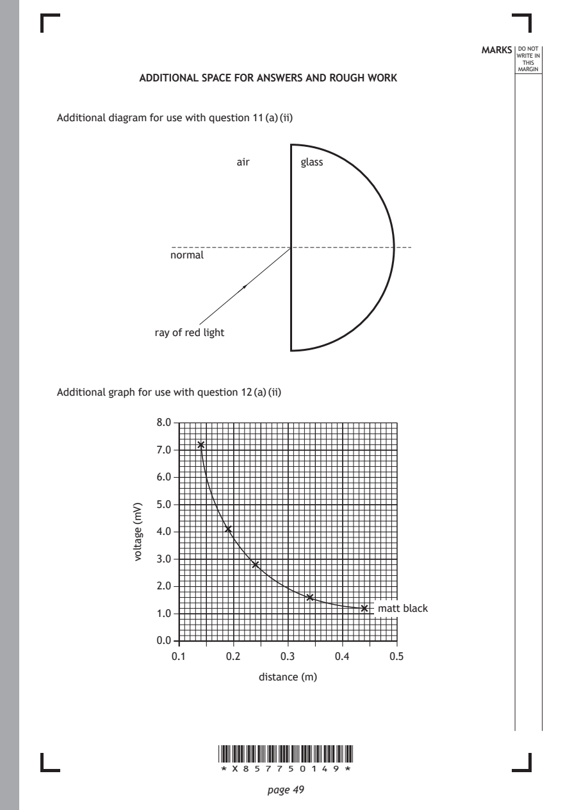
Selectable page text
MARKS _{W}^{D}_{R}^{O}_{I} _{T}^{N}OT
E IN
THIS
MARGIN
ADDITIONAL SPACE FOR ANSWERS AND ROUGH WORK
Additional diagram for use with question 11 (a) (ii)
air glass
normal
ray of red light
Additional graph for use with question 12 (a) (ii)
*X857750149*
page 49
)Vm(
egatlov
8.0
7.0
6.0
5.0
4.0
3.0
2.0
matt black
1.0
0.0
0.1 0.2 0.3 0.4 0.5
distance (m)PDF page 50

Selectable page text
MARKS _{W}^{D}_{R}^{O}_{I} _{T}^{N}OT
E IN
THIS
MARGIN
ADDITIONAL SPACE FOR ANSWERS AND ROUGH WORK
*X857750150*
page 50PDF page 51
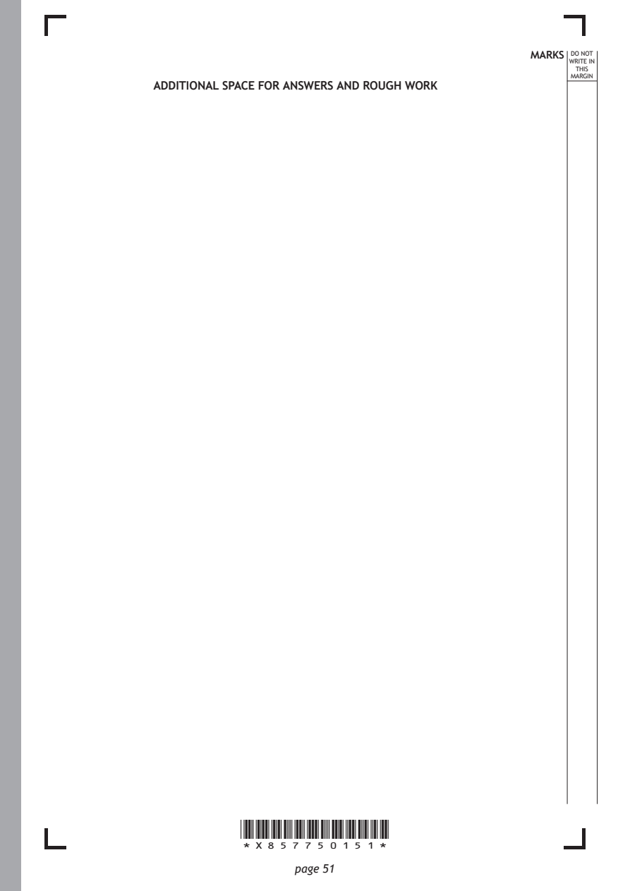
Selectable page text
MARKS _{W}^{D}_{R}^{O}_{I} _{T}^{N}OT
E IN
THIS
MARGIN
ADDITIONAL SPACE FOR ANSWERS AND ROUGH WORK
*X857750151*
page 51PDF page 52
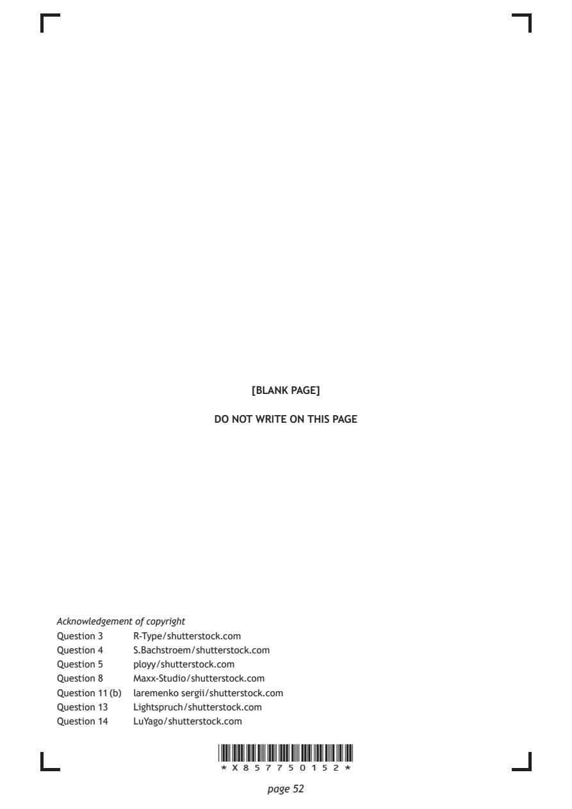
Selectable page text
[BLANK PAGE]
DO NOT WRITE ON THIS PAGE
Acknowledgement of copyright
Question 3 R-Type/shutterstock.com
Question 4 S.Bachstroem/shutterstock.com
Question 5 ployy/shutterstock.com
Question 8 Maxx-Studio/shutterstock.com
Question 11 (b) laremenko sergii/shutterstock.com
Question 13 Lightspruch/shutterstock.com
Question 14 LuYago/shutterstock.com
*X857750152*
page 52